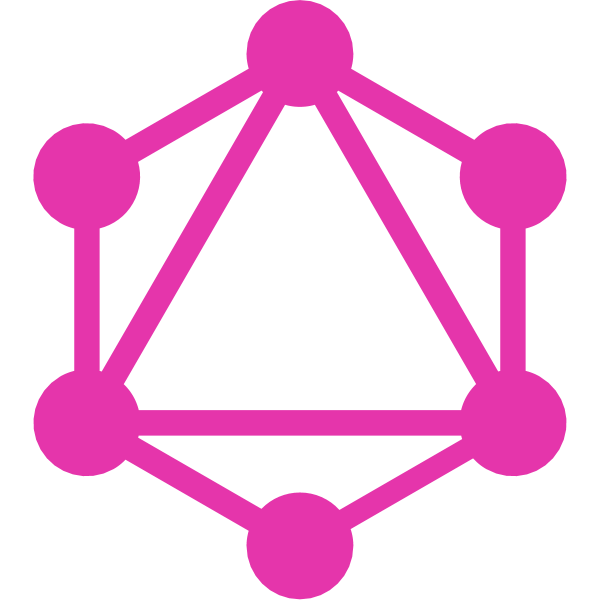

In the name of SALMAN's GOD
A seeker who neither the hardships nor the pleasures of his path made him tired and discouraged from searching and questioning
Out team


Zahra Famil Sattari
Elham Afshar
Masoumeh Hashemi
Mina Yaghubi Kia
Mahdi Taala
Mohammad Hossein Etefaghian
Amir Hossein Seif
Seyyed Mahdi Hosseini
Ehsan Akefi
Mohammad Javad Mohammadi
Amir Hossein Meyari
Amir Hossein Babaeyan
Seyyed Amir Masoud Hosseini
What is the problem ?
4 + 1 new solutions for the future of programming
1. Controlling data waste
Describe-driven data receive

GraphQL
a layer between the user interface and the backend logic
with a focus on data description
with a focus on data description

GraphQL problems
- There was no type safety
- Adding GQL language to the both of frontend and backend side
- Change standard concepts and define new ones
- Easily create many infilit loop to receive data
- Defining attributes is based on sql and dependent on it
 2. Relationship Management
2. Relationship Management
حذف جداول و روابط بین داده ها که پیچیدگی دریافت، ارائه و تحلیل محتوا می شود.
شعارها
GraphQL : هر چی میخواید با یک درخواست از سرور بگیرید
ما : هر چی میخواید با یک درخواست از سرور و همچنین یک درخواست از دیتابیس بگیرید
 ۳. ایجاد محتوای ایستا و قابل فهم
۳. ایجاد محتوای ایستا و قابل فهم
محتوای درست در فضای سایبر محتواییست که به سرعت قابل دسترس و به غایت قابل فهم برای موتور های جستجو باشد.
منابع محدود سخت افزاری، درخواست های مکرر دریافت محتوا و مقیاس بیش از اندازه داده ها به ناچار همه برنامه های سمت سرور را به سوی شکسته شدن منطق و داده به قسمت های کوچک تر می برد.
توسعه و ساخت برنامه های جدید و حتی حدس نیاز های دنیای آینده با هوش مصنوعی و الگوریتم های یادگیری ماشین رخ می دهد.

 فضل
فضل
تسهیل گر تمدن ما با زبان امروز و آینده بشر